cartoons.de
cartoons.deVerschiedenes – Tattoo-Vorlagen, Trauring-Gravuren, Flickengestaltung
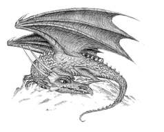
Illustrationen lassen sich für die verschiedensten Zwecke verwenden. Ich helfe Ihnen bei der Maskottchen-Gestaltung, erstelle Vorlagen für Tattoos, T-Shirts, Kinderflicken, Trauring-Gravuren und was Ihnen sonst noch so einfällt.
Tattoo-Vorlage Drache (Wyvern)
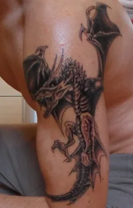
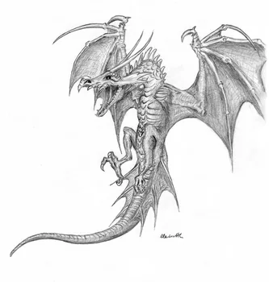
Kindermotiv für Flicken – Frosch
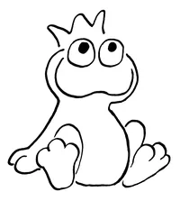
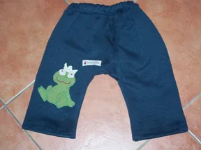
Gravurvorlagen für Trauringe – Frosch und Elefant
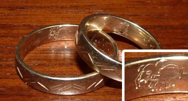
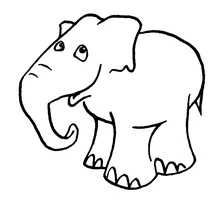
Vorschlag T-Shirt Aikido Föderation Deutschland
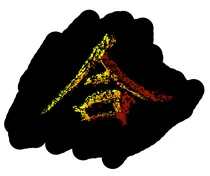
Star-Wars-T-Shirts zur Jedi-Con 2008
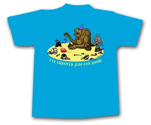
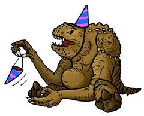
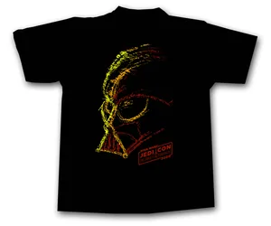
Tasse bedruckt mit traurigem Frosch
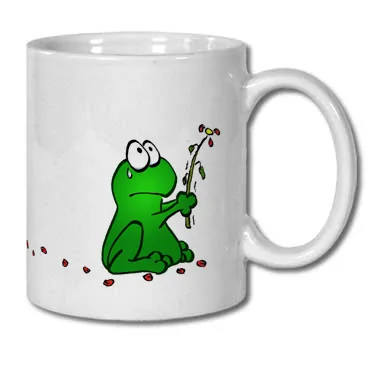
Impressum · Datenschutz©
2004–2026 Ronald Markworth